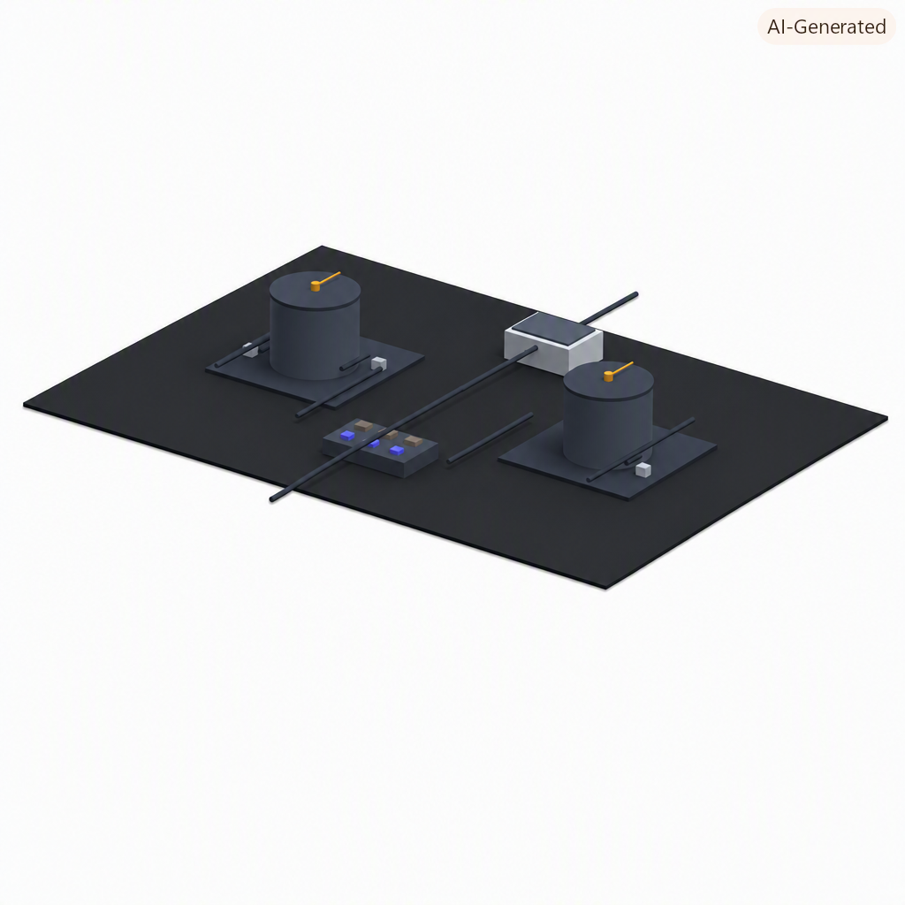

Website Hero Animation 2 (live as of 2026-07-27) — the sensor-hardware isometric render supplied by the user, with 5 flashing sensor-point markers (the two tank probes, the gateway/hub unit, and the two device status LEDs) overlaid at their actual positions on the image. Replaced Website Hero Animation 1 in the live marketing site's hero section.
